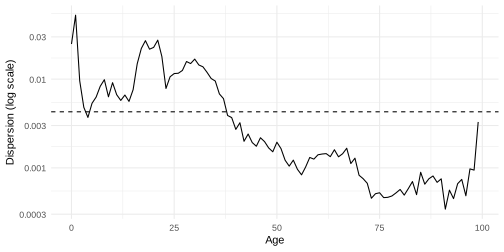
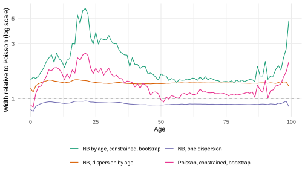
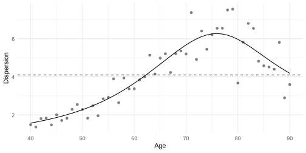
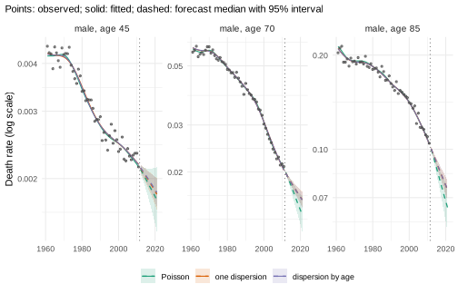
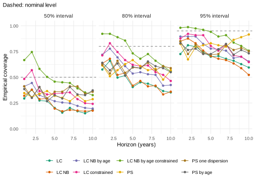

Overdispersion: extra variation in death counts
Source:vignettes/overdispersion.Rmd
overdispersion.RmdThis vignette is precomputed
(dev/precompute-vignettes.R) because its bootstraps and
backtests take about a minute.
Most models in this package treat the deaths of an age group in a year as Poisson counts given the death rate. Real death counts often vary more. This vignette explains where the extra variation comes from, shows the published ways of modelling it for Lee-Carter and for P-splines, and what they do to the forecast intervals.
Why deaths vary more than Poisson counts
Poisson counts arise when everybody in a cell (an age group in a year) has the same probability of dying, independently of the others. Their variance equals their mean. Two things make real counts vary more:
- Heterogeneity. The people in a cell differ in health, occupation, education and region, and the mix changes from year to year. Deaths also cluster: an epidemic, a heat wave or a hard winter raises the deaths of many people in the same cells. Li, Hardy and Tan (2009) model this by clusters within each cell whose death rates differ by a gamma distributed factor.
- Unmodelled variation. A model with few parameters leaves part of the variation of the rates unexplained. Lee-Carter has one period index, so a year that is unusual at only some ages deviates from the fit. These deviations look like extra variation of the counts around the fitted means.
The counts are then overdispersed: their variance exceeds their mean. Overdispersion is common in counts (McCullagh and Nelder 1989). A Poisson model of overdispersed counts overstates the precision of its estimates, and its interval forecasts are too narrow (Li, Hardy and Tan 2009, Section 3). Where a criterion of the Poisson deviance chooses the smoothness of a surface, the surface follows the noise (Djeundje and Currie 2011).
summary() of a fit reports the Poisson deviance per
cell, which is about 1 for Poisson counts around a correct model. The
models below use two forms of the extra variation:
Variance of the deaths D with mean mu
|
Constructor | Source |
|---|---|---|
mu + alpha mu^2, one alpha
|
lee_carter(family = "nb") |
Delwarde, Denuit and Partrat (2007) |
mu + alpha[x] mu^2, one alpha per age |
lee_carter(family = "nb", dispersion = "age") |
Li, Hardy and Tan (2009) |
phi mu, one phi
|
p_splines(overdispersion = TRUE) |
MortalitySmooth (Camarda 2015) |
phi[x] mu, smooth over age |
p_splines(overdispersion = "age") |
Djeundje and Currie (2011) |
The first form is the negative binomial distribution: Poisson deaths
given a rate that varies around the model by a gamma distributed factor
with mean 1 and variance alpha. sqrt(alpha) is
the coefficient of variation of that factor. Its share of the variance
grows with the mean, so it dominates in cells with many deaths. The
second form keeps the Poisson relation between mean and variance and
multiplies the variance by phi (quasi-likelihood).
Lee-Carter: one dispersion or one per age
The data are France, total population, ages 0-99, 1950-2006 (Human Mortality Database, via the demography package). Li, Hardy and Tan (2009) used the same ages and the years 1950-2004 for the United States and Canada. The Poisson Lee-Carter model (Lee and Carter 1992; Brouhns, Denuit and Vermunt 2002) first:
fr <- as_mt_data(demography::fr.mort, series = "total", years = 1950:2006)
fr <- mt_subset(fr, ages = c(0, 100))
fit_p <- mt_fit(lee_carter(), fr)
summary(fit_p)
#> Lee-Carter
#> data: 1 strata; ages 0 to 99; periods 1950-2006
#> model and uncertainty:
#> log m(x,t) = a(x) + b(x) k(t), estimated by Poisson maximum likelihood
#> (Brouhns et al. 2002). k(t) follows a random walk with drift; draws include
#> its innovations and the uncertainty of the drift. a(x) and b(x) are fixed
#> (parameter uncertainty with bootstrapped()). Predictive draws add Poisson
#> variation of the deaths given the rates. Jump-off: fitted rates.
#> fit: Poisson deviance 62154.5 on 5700 cells (10.90 per cell); 44.9% of deviance residuals beyond +/-2The Poisson deviance is 10.9 per cell, and 44.9% of the deviance residuals lie beyond ±2 (about 5% for Poisson counts around a correct model). The negative binomial versions estimate the extra variation, with one dispersion for all ages (Delwarde, Denuit and Partrat 2007) or one per age (Li, Hardy and Tan 2009):
lc <- list("Poisson" = lee_carter(),
"NB, one dispersion" = lee_carter(family = "nb"),
"NB, dispersion by age" = lee_carter(family = "nb", dispersion = "age"))
fits <- lapply(lc, mt_fit, data = fr)
mt_parameters(fits[["NB, one dispersion"]])[parameter == "nb_dispersion"]
#> stratum parameter index value
#> 1: total nb_dispersion 0.004283558
disp <- mt_parameters(fits[["NB, dispersion by age"]])[parameter == "nb_dispersion"]
disp[index %in% c(0, 1, 10, 20, 30, 40, 60, 80, 90, 99), .(age = index, dispersion = signif(value, 2))]
#> age dispersion
#> 1: 0 0.02500
#> 2: 1 0.05300
#> 3: 10 0.00910
#> 4: 20 0.02300
#> 5: 30 0.01700
#> 6: 40 0.00270
#> 7: 60 0.00140
#> 8: 80 0.00057
#> 9: 90 0.00075
#> 10: 99 0.00330mt_parameters() reports the dispersions
(nb_dispersion). The single dispersion is 0.0043: the rate
of a cell varies around the model by a factor with a coefficient of
variation of about 6.5% (sqrt(0.0043)). By age, the
dispersion ranges from 0.00034 at age 91 (1.8%) to 0.053 at age 1 (23%).
The dashed line is the single dispersion:
ggplot2::ggplot(disp, ggplot2::aes(as.numeric(index), value)) +
ggplot2::geom_line() +
ggplot2::geom_hline(yintercept = mt_parameters(fits[["NB, one dispersion"]])[parameter == "nb_dispersion", value],
linetype = "dashed") +
ggplot2::scale_y_log10(labels = function(v) sprintf("%g", v)) +
ggplot2::labs(x = "Age", y = "Dispersion (log scale)") +
theme_mortensor()
The dispersion is highest in the first years of life and between ages 15 and 35, lowest from about age 70, and rises again at the highest ages. The single dispersion is too high for the old ages and too low for young adults. Li, Hardy and Tan (2009, Section 4.2) found that the dispersion varies with age in their data and that one dispersion for all ages is insufficient.
Likelihood ratio. The log-likelihood of each fit
follows from its parameters a, b,
k and the dispersions. The number of parameters counts
a and b for 100 ages and k for 57
years, less the two constraints sum(b) = 1 and
sum(k) = 0, plus the dispersions:
loglik <- function(fit, data) {
p <- mt_parameters(fit)
mu <- mt_array(data, "exposure")[, , 1] *
exp(p[parameter == "a", value] + outer(p[parameter == "b", value], p[parameter == "k", value]))
D <- mt_array(data, "deaths")[, , 1]
alpha <- p[parameter == "nb_dispersion", value]
if (!length(alpha)) return(sum(stats::dpois(D, mu, log = TRUE)))
sum(stats::dnbinom(D, size = 1 / alpha, mu = mu, log = TRUE))
}
n_age <- 100
n_year <- 57
ll <- vapply(fits, loglik, 0, data = fr)
n_par <- 2 * n_age + n_year - 2 + c(0, 1, n_age)
data.table(model = names(fits), loglik = round(ll), parameters = n_par, AIC = round(-2 * ll + 2 * n_par))
#> model loglik parameters AIC
#> 1: Poisson -58457 255 117423
#> 2: NB, one dispersion -37648 256 75809
#> 3: NB, dispersion by age -36007 355 72725
c(lr = 2 * (ll[[3]] - ll[[2]]), df = n_age - 1, q99 = stats::qchisq(0.99, n_age - 1))
#> lr df q99
#> 3282.0369 99.0000 134.6416One dispersion raises the log-likelihood by about 20,800. The dispersions by age raise it by another 1,641 with 99 more parameters: the likelihood ratio statistic is 3,282 on 99 degrees of freedom, far above the 99% quantile of the chi-squared distribution (135). The AIC also prefers the dispersion by age (72,725 against 75,809 and 117,423).
Forecast origin correction. With
sum(k) = 0, the fitted rates of the last year differ from
the observed ones, and the forecast starts from the fitted rates. Li,
Hardy and Tan (2009, Section 3 and Appendix 2) fix a[x] at
the observed log rates of the last year and k at 0 in that
year, and estimate b, k and the dispersions by
maximum likelihood under these constraints
(jump_off = "constrained"):
fit_c <- mt_fit(lee_carter(family = "nb", dispersion = "age", jump_off = "constrained"), fr)
disp_c <- mt_parameters(fit_c)[parameter == "nb_dispersion", value]
c(loglik = loglik(fit_c, fr), median_ratio = stats::median(disp_c / disp$value))
#> loglik median_ratio
#> -36772.619295 1.273315The constraints lower the log-likelihood (-36,773 against -36,007). The constrained fit leaves more variation around the fitted rates, and the dispersions take it up: they are 1.27 times those of the fit without the constraints (median over ages).
Parametric bootstrap. The draws of
lee_carter() include the innovations of k and
the uncertainty of its drift; a and b are
fixed. bootstrap = TRUE adds the uncertainty of the
parameters by the parametric bootstrap of Li, Hardy and Tan (2009,
Section 3). It simulates deaths from the fitted model, refits
a, b and k to each simulated data
set (with the constraint, a comes from the simulated deaths
of the last year), and simulates the forecast of k from
each refit. The dispersions stay at their estimates. The last model
below is the paper’s method; 200 refits keep this vignette fast:
set.seed(1)
fits[["Poisson, constrained, bootstrap"]] <- mt_fit(lee_carter(jump_off = "constrained", bootstrap = TRUE,
n_boot = 200), fr)
fits[["NB by age, constrained, bootstrap"]] <- mt_fit(lee_carter(family = "nb", dispersion = "age",
jump_off = "constrained", bootstrap = TRUE,
n_boot = 200), fr)
fc <- lapply(fits, mt_forecast, h = 10, n_draws = 1000, seed = 1)
fc_pred <- lapply(fits, mt_forecast, h = 10, n_draws = 1000, seed = 1, predictive = TRUE)
rbindlist(lapply(c("NB, dispersion by age", "NB by age, constrained, bootstrap"), function(m) {
mt_jump_off(fc[[m]])[, .(model = m, observed = round(observed, 2), fitted = round(fitted, 2))]
}))
#> model observed fitted
#> 1: NB, dispersion by age 80.69 80.65
#> 2: NB by age, constrained, bootstrap 80.69 80.69mt_jump_off() shows life expectancy at birth in 2006:
the constrained fit reproduces the observed 80.69 years, the fit without
the constraints gives 80.65.
Width of the intervals. The table compares the
widths of the 95% intervals of the log death rates in 2016 (h = 10) with
those of the Poisson model, as the median over ages of their ratio: for
the rates (the draws of mt_forecast()) and for the observed
rates (predictive = TRUE, which adds negative binomial or
Poisson variation of the deaths). sd_k is the standard
deviation of the yearly changes of k, e0_width
the width of the 95% interval of life expectancy at birth in 2016 in
years:
width <- function(f, year = 2016) {
s <- mt_summarise(f, probs = c(0.025, 0.975))[period == year]
data.table(age = s$age_lo, width = log(s$q0.975) - log(s$q0.025))
}
w <- rbindlist(lapply(names(fc), function(m) width(fc[[m]])[, model := m]))
w[, ratio := width / width[model == "Poisson"], by = age]
wp <- rbindlist(lapply(names(fc_pred), function(m) width(fc_pred[[m]])[, model := m]))
wp[, ratio := width / width[model == "Poisson"], by = age]
e0 <- rbindlist(lapply(names(fc), function(m) life_expectancy(fc[[m]])[period == 2016, .(model = m, q0.025, q0.975)]))
tab <- data.table(model = names(fits),
sd_k = vapply(fits, function(f) mt_parameters(f)[parameter == "sd_k", value], 0),
ratio_rates = w[, stats::median(ratio), by = model]$V1,
ratio_predictive = wp[, stats::median(ratio), by = model]$V1,
e0_width = e0[, q0.975 - q0.025])
tab[, lapply(.SD, function(v) if (is.numeric(v)) round(v, 2) else v)]
#> model sd_k ratio_rates ratio_predictive e0_width
#> 1: Poisson 2.66 1.00 1.00 3.36
#> 2: NB, one dispersion 2.37 0.89 1.20 2.98
#> 3: NB, dispersion by age 3.61 1.36 1.43 4.60
#> 4: Poisson, constrained, bootstrap 3.11 1.24 1.20 3.79
#> 5: NB by age, constrained, bootstrap 3.81 1.65 1.67 4.68- The dispersion by age widens the intervals of the rates by a factor
of 1.36. Without the bootstrap, these intervals come from the forecast
of
konly, and the yearly changes ofkvary more (standard deviation 3.61 against 2.66). The interval of life expectancy widens from 3.36 to 4.60 years. - One dispersion narrows the intervals of the rates here (0.89): its
kvaries less (2.37). Its predictive intervals are wider (1.20), because its deaths are drawn with the dispersion. - The forecast origin correction with the bootstrap widens the intervals further: by 1.24 for the Poisson model and by 1.65 for the dispersion by age.
The dispersions change k through the weights of the
cells. The information of a cell on k[t] is
b[x]^2 mu / (1 + alpha mu): b[x]^2 mu for
Poisson counts, and at most b[x]^2 / alpha with a
dispersion. Summed over the years, the shares of four age groups in the
information on k:
info_share <- function(fit) {
p <- mt_parameters(fit)
b <- p[parameter == "b", value]
mu <- mt_array(fr, "exposure")[, , 1] * exp(p[parameter == "a", value] + outer(b, p[parameter == "k", value]))
alpha <- p[parameter == "nb_dispersion", value]
if (!length(alpha)) alpha <- 0
info <- rowSums(b^2 * mu / (1 + alpha * mu))
round(tapply(info, cut(0:99, c(-1, 14, 39, 64, 99), labels = c("0-14", "15-39", "40-64", "65-99")), sum) /
sum(info), 3)
}
t(vapply(fits[names(lc)], info_share, numeric(4)))
#> 0-14 15-39 40-64 65-99
#> Poisson 0.245 0.023 0.137 0.595
#> NB, one dispersion 0.370 0.145 0.184 0.301
#> NB, dispersion by age 0.076 0.026 0.194 0.704One dispersion moves weight from the old ages, with the most deaths, to the younger ages. The dispersion by age moves weight from ages 0-14, where the dispersion and, in the early years, the deaths were high, to ages 40 and over, where the dispersion is small.
By age, the widths relative to the Poisson model:
ggplot2::ggplot(w[model != "Poisson"], ggplot2::aes(age, ratio, colour = model)) +
ggplot2::geom_hline(yintercept = 1, linetype = "dashed", colour = "grey50") +
ggplot2::geom_line() +
ggplot2::scale_y_log10() +
ggplot2::labs(x = "Age", y = "Width relative to Poisson (log scale)", colour = NULL) +
scale_colour_mortensor(type = "categorical") +
theme_mortensor() +
ggplot2::guides(colour = ggplot2::guide_legend(nrow = 2))
w[age %in% c(0, 20, 40, 60, 80, 95), .(age, model, ratio = round(ratio, 2))][
, dcast(.SD, age ~ model, value.var = "ratio")]
#> age NB by age, constrained, bootstrap NB, dispersion by age
#> 1: 0 1.45 1.22
#> 2: 20 5.81 1.43
#> 3: 40 1.98 1.34
#> 4: 60 1.48 1.36
#> 5: 80 1.39 1.36
#> 6: 95 1.93 1.38
#> NB, one dispersion Poisson Poisson, constrained, bootstrap
#> 1: 0.80 1 0.88
#> 2: 0.94 1 2.39
#> 3: 0.89 1 1.26
#> 4: 0.89 1 1.08
#> 5: 0.89 1 1.08
#> 6: 0.91 1 1.30
r <- w[model == "NB by age, constrained, bootstrap", width] / w[model == "Poisson, constrained, bootstrap", width]
round(c(min = min(r), median = stats::median(r), max = max(r)), 2)
#> min median max
#> 1.12 1.39 2.45The bootstrap with the dispersion by age widens the intervals most at
ages 15 to 30 (5.81 times the Poisson width at age 20) and at the
highest ages. At ages 15 to 30 the dispersion is high and the deaths are
few. Every refit resamples the deaths of the last year, so the jump-off
varies between the refits: at age 20 the dispersion of 0.023 alone gives
the log rate of the last year a standard deviation of about 0.15
(sqrt(0.023)). The paper compares its method with the
Poisson model with the same correction and bootstrap. Here that ratio
ranges from 1.12 to 2.45 over ages (median 1.39); the paper reports
increases of the widths from 25% to 92% for Canada and from 18% to more
than 180% for the United States (Section 4.4).
P-splines: a smooth dispersion by age
p_splines() smooths the log rates over age and year with
a penalised B-spline surface and extends the surface over the forecast
years (Currie, Durban and Eilers 2004). The smoothing parameters
minimise the BIC of the Poisson deviance. With overdispersed counts,
this criterion rewards a surface that follows the noise.
overdispersion = TRUE divides the deviance by one
dispersion phi, as MortalitySmooth does.
overdispersion = "age" divides it by a dispersion
phi[x] that varies smoothly over age (Djeundje and Currie
2011, Model 3): the variance of the deaths is phi[x] times
their mean. These dispersions are bias-corrected Pearson statistics by
age, smoothed over age and iterated with the fit.
The data are England and Wales men, ages 40-90, 1961-2011 (Human Mortality Database, via the StMoMo package). The paper’s example has the same ages (assured lives of the Continuous Mortality Investigation, 1950-2006).
ew <- mt_subset(as_mt_data(StMoMo::EWMaleData), ages = c(40, 91))
ps <- list("Poisson" = p_splines(), "one dispersion" = p_splines(overdispersion = TRUE),
"dispersion by age" = p_splines(overdispersion = "age"))
pfits <- lapply(ps, mt_fit, data = ew)
rbindlist(lapply(names(pfits), function(m) {
p <- mt_parameters(pfits[[m]])
data.table(model = m, lambda_age = signif(p[parameter == "lambda_age", value], 3),
lambda_year = signif(p[parameter == "lambda_year", value], 3),
ed = round(p[parameter == "ed", value], 1),
dispersion = paste(unique(round(range(p[parameter == "dispersion", value]), 2)), collapse = " to "))
}))
#> model lambda_age lambda_year ed dispersion
#> 1: Poisson 81.4 60.3 102.6 3.87
#> 2: one dispersion 944.0 538.0 47.7 4.09
#> 3: dispersion by age 960.0 575.0 48.0 1.57 to 6.27The dispersion of the Poisson fit is its deviance
divided by the number of cells less the effective dimension
ed: 3.87, well above 1. With the dispersion in the
criterion, the selected smoothing parameters are about ten times larger
and the effective dimension falls from 102.6 to 47.7 and 48.0: the
surface is smoother. Djeundje and Currie (2011, Table 1) report the same
direction for their data (46, 36 and 33).
pd <- mt_parameters(pfits[["dispersion by age"]])[parameter %in% c("dispersion", "dispersion_raw")]
ggplot2::ggplot(pd, ggplot2::aes(as.numeric(index), value)) +
ggplot2::geom_point(data = pd[parameter == "dispersion_raw"], colour = "grey50") +
ggplot2::geom_line(data = pd[parameter == "dispersion"]) +
ggplot2::geom_hline(yintercept = mt_parameters(pfits[["one dispersion"]])[parameter == "dispersion", value],
linetype = "dashed") +
ggplot2::labs(x = "Age", y = "Dispersion") +
theme_mortensor()
pd[parameter == "dispersion" & index %in% c(40, 50, 60, 70, 76, 80, 90), .(age = index, dispersion = round(value, 2))]
#> age dispersion
#> 1: 40 1.57
#> 2: 50 2.27
#> 3: 60 3.66
#> 4: 70 5.67
#> 5: 76 6.27
#> 6: 80 5.96
#> 7: 90 4.18The dispersion by age (line; points: the bias-corrected statistics it smooths) rises from 1.57 at age 40 to 6.27 at age 76 and falls to 4.18 at age 90. The dashed line is the single dispersion, 4.09. The forecasts to 2021:
pfc <- lapply(pfits, mt_forecast, h = 10, n_draws = 1000, seed = 1)
pfc_pred <- lapply(pfits, mt_forecast, h = 10, n_draws = 1000, seed = 1, predictive = TRUE)
mt_plot_compare(pfc, quantity = "rate", ages = c("45", "70", "85"), data = ew)
The three fits are close in the observed years. At ages 70 and 85 the Poisson forecast declines faster, and its intervals are about twice as wide. Widths of the 95% intervals of the log rates in 2021, for the rates and for the predictive draws:
pw <- rbindlist(lapply(names(pfc), function(m) {
merge(width(pfc[[m]], 2021), width(pfc_pred[[m]], 2021), by = "age", suffixes = c("_rates", "_predictive"))[
, model := m]
}))
pw[age %in% c(45, 70, 85), .(age, model, width_rates = round(width_rates, 3),
width_predictive = round(width_predictive, 3))]
#> age model width_rates width_predictive
#> 1: 45 Poisson 0.387 0.420
#> 2: 70 Poisson 0.304 0.313
#> 3: 85 Poisson 0.333 0.340
#> 4: 45 one dispersion 0.190 0.228
#> 5: 70 one dispersion 0.137 0.148
#> 6: 85 one dispersion 0.150 0.157
#> 7: 45 dispersion by age 0.168 0.228
#> 8: 70 dispersion by age 0.136 0.149
#> 9: 85 dispersion by age 0.149 0.162The dispersions narrow the intervals of the rates to about half (at
age 45 from 0.387 to 0.190 and 0.168). Djeundje and Currie (2011,
Section 5.2.3) explain this: the dispersion down-weights the fit to the
data, the selected surface is less volatile, and the forecast of a less
volatile surface is more certain. The predictive draws
(predictive = TRUE, and the draws that
mt_backtest() scores) add Poisson variation of the deaths
for all three fits: the quasi-likelihood defines the mean and the
variance of the deaths and no distribution. Their predictive intervals
thus leave out the dispersion of the deaths around the surface.
A backtest
Whether wider or narrower intervals cover the observed rates is a
question of the data. A backtest on England and Wales men, ages 40-90,
fits each model to the years up to 1991, 1996 and 2001 and scores the
next ten years (mt_compare(); see “Backtesting and
scores”). “constrained” stands for
jump_off = "constrained", bootstrap = TRUE with 100
refits:
models <- list("LC" = lee_carter(),
"LC NB" = lee_carter(family = "nb"),
"LC NB by age" = lee_carter(family = "nb", dispersion = "age"),
"LC constrained" = lee_carter(jump_off = "constrained", bootstrap = TRUE, n_boot = 100),
"LC NB by age constrained" = lee_carter(family = "nb", dispersion = "age", jump_off = "constrained",
bootstrap = TRUE, n_boot = 100),
"PS" = p_splines(),
"PS one dispersion" = p_splines(overdispersion = TRUE),
"PS by age" = p_splines(overdispersion = "age"))
bt <- mt_compare(models, ew, origins = c(1991, 1996, 2001), h = 10, n_draws = 500)
mt_score_table(bt, metrics = c("crps", "mae", "cov50", "cov80", "cov95"))
#> model crps mae cov50 cov80 cov95
#> 1: LC 0.0698 0.0956 0.228 0.467 0.705
#> 2: LC NB 0.0714 0.0970 0.235 0.478 0.711
#> 3: LC NB by age 0.0666 0.0932 0.287 0.578 0.786
#> 4: LC constrained 0.0565 0.0781 0.357 0.633 0.805
#> 5: LC NB by age constrained 0.0564 0.0781 0.492 0.755 0.905
#> 6: PS 0.0359 0.0505 0.313 0.579 0.820
#> 7: PS one dispersion 0.0302 0.0402 0.365 0.595 0.768
#> 8: PS by age 0.0293 0.0390 0.342 0.595 0.763On these data:
- The forecast origin correction makes Lee-Carter more accurate (CRPS 0.0565 against 0.0698, MAE 0.0781 against 0.0956): the forecast starts from the observed rates.
- The dispersion by age widens the Lee-Carter intervals. The 95% coverage rises from 0.705 to 0.786 without the correction (CRPS 0.0666 against 0.0698) and from 0.805 to 0.905 with it (CRPS 0.0564 against 0.0565). One dispersion changes little (0.711).
- The P-splines forecast these data more accurately than all Lee-Carter variants. Their dispersions lower the CRPS (from 0.0359 to 0.0302 and 0.0293) and narrow the intervals: the 95% coverage falls from 0.820 to 0.768 and 0.763.
- No variant reaches the nominal coverage at all three levels. The coverage of the Lee-Carter variants falls with the horizon, and that of the Poisson P-splines rises at the longest horizons:
mt_plot_coverage(bt)
These results hold for these data, ages and origins. Coverage and accuracy depend on the population and the period; a backtest on the data at hand shows which variant suits them.
When to use which
lee_carter(family = "nb", dispersion = "age") suits data
that vary much more around a Lee-Carter fit than Poisson counts (a
deviance per cell well above 1); with
jump_off = "constrained", bootstrap = TRUE it is the method
of Li, Hardy and Tan (2009), and in both examples here it widened the
intervals. p_splines(overdispersion = TRUE) or
"age" keeps a P-spline surface from following the noise:
the fit is smoother and the intervals of the rates are narrower, with
Poisson predictive draws. A dispersion estimated around a rigid model
also measures its misfit, and the error of the trend that grows with the
horizon remains: recalibrated() widens intervals from past
forecast errors (“Tuning and recalibration”).
References
Brouhns N, Denuit M, Vermunt JK (2002). A Poisson log-bilinear regression approach to the construction of projected lifetables. Insurance: Mathematics and Economics 31(3): 373-393. doi:10.1016/S0167-6687(02)00185-3.
Camarda CG (2015). MortalitySmooth: Smoothing and forecasting Poisson counts with P-splines. R package version 2.3.4 (CRAN archive).
Currie ID, Durban M, Eilers PHC (2004). Smoothing and forecasting mortality rates. Statistical Modelling 4(4): 279-298. doi:10.1191/1471082X04st080oa.
Delwarde A, Denuit M, Partrat C (2007). Negative binomial version of the Lee-Carter model for mortality forecasting. Applied Stochastic Models in Business and Industry 23(5): 385-401. doi:10.1002/asmb.679.
Djeundje VAB, Currie ID (2011). Smoothing dispersed counts with applications to mortality data. Annals of Actuarial Science 5(1): 33-52. doi:10.1017/S1748499510000047.
Lee RD, Carter LR (1992). Modeling and forecasting U.S. mortality. Journal of the American Statistical Association 87(419): 659-671. doi:10.1080/01621459.1992.10475265.
Li JS-H, Hardy MR, Tan KS (2009). Uncertainty in mortality forecasting: an extension to the classical Lee-Carter approach. ASTIN Bulletin 39(1): 137-164. doi:10.2143/AST.39.1.2038060.
McCullagh P, Nelder JA (1989). Generalized Linear Models. 2nd edition. Chapman and Hall, London. doi:10.1007/978-1-4899-3242-6.